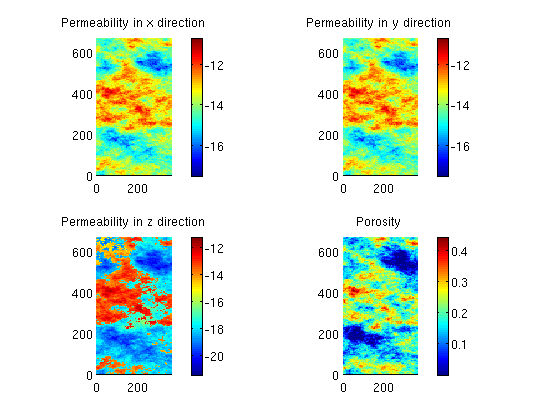
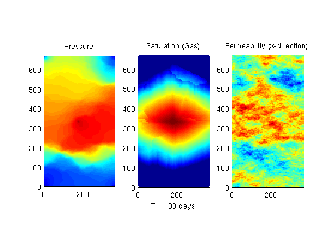

Contents
- Document example dependcies
- Define a oil/gas system
- Set up grid and get petrophysical properties.
- Show grid and petrophysical properties
- Set up four producers at reservoir pressure and an injector at 500 bar
- Compute one time values for the IMPES solver
- Initialize a oil filled reservoir at 200 bar.
- Do actual simulations
Document example dependcies
require impes spe10 deckformat
Define a oil/gas system
The fluid data is contained in the file 'simpleOilGas.txt'. We read and process this using the deckformat module.
current_dir = fileparts(mfilename('fullpath')); f = fullfile(current_dir, 'simpleOilGas.txt'); deck = readEclipseDeck(f); % Once the file has been read, we can use it to create the desired fluid. fluid = initEclipseFluid(deck);
Set up grid and get petrophysical properties.
We select three layers to
layers = 25:28; cartDims = [60, 220, numel(layers)]; physDims = cartDims.*[20,10,2]*ft; rock = SPE10_rock(layers); rock.perm = convertFrom(rock.perm, milli*darcy); gravity off % Define a Cartesian Grid based on the SPE layers selected. G = cartGrid(cartDims, physDims); G = computeGeometry(G); % Cells with zero porosity are masked away to the minimum value to get % sensible results. is_pos = rock.poro>0; rock.poro(~is_pos) = min(rock.poro(is_pos));
Show grid and petrophysical properties
Since the variations are large, use a logarithmic scale for permeability
perm = log10(rock.perm);
c = {'x', 'y', 'z'};
clf;
for i = 1:3
subplot(2,2,i);
plotCellData(G, perm(:,i));
colorbar();
axis equal tight;
title(sprintf('Permeability in %s direction', c{i}));
end
% Plot porosity
subplot(2,2,4);
plotCellData(G, rock.poro);
colorbar();
axis equal tight;
title('Porosity')
 Set up four producers at reservoir pressure and an injector at 500 bar
% Initialize empty well structure W = []; % Add an injector in the middle of the domain based on the midpoints of the % cartesian indices midpoint = round(cartDims)./2; % Use vertical well, with completion in all layers. To complete in a % different set of layers, enter the indices of the layers in completion completion = []; W = verticalWell(W, G, rock, midpoint(1), midpoint(2), completion, ... 'Type', 'bhp',... % Bottom hole pressure well 'Val', 500*barsa,... % Driving pressure 'Radius', .125*meter, ... % As per SPE10 Case B 'InnerProduct', 'ip_tpf',... % Use TPFA inner product 'Comp_i', [0, 1]); % Injects only gas % We want to place an producer in each corner of the domain, so we iterate % over the corners and add a 200 bar well at each corner. h_ind = [1, G.cartDims(1)]; v_ind = [1, G.cartDims(2)]; for i = 1:2 for j = 1:2 W = verticalWell(W, G, rock, h_ind(i), v_ind(j), [], ... 'Type', 'bhp',... 'Val', 200*barsa, ... 'Radius', .125*meter, ... 'InnerProduct', 'ip_tpf', ... 'Comp_i', [1, 0]); end end
Compute one time values for the IMPES solver
Compute TPFA transmissibilities
Trans = computeTrans(G, rock);
% Compute pore volume
PV = poreVolume(G, rock);
Initialize a oil filled reservoir at 200 bar.
Initially, it contains no gas
x = initResSolComp(G, W, fluid, 200*barsa, [1, 0]);
Do actual simulations
Simulate 100 days of production
dT = 1*day; Nt = 100; f1 = figure(1); T = 0; tic() for kk = 1:Nt, x = impesTPFA(x, G, Trans, fluid, dT, PV, 'wells', W); T = T + dT; % We skip drawing the values for the cells containing wells, since they % are always outliers. notPerf = ~ismember(1:G.cells.num, vertcat(W.cells)); set(0, 'CurrentFigure', f1); clf; % Plot the pressure. subplot(1,3,1); plotCellData(G, (x.pressure), notPerf); title('Pressure') axis equal tight; % Plot the gas saturation subplot(1,3,2); plotCellData(G, log10(x.s(:,2)), notPerf); title('Saturation (Gas)') xlabel(sprintf('T = %1.0f days', convertTo(T, day))); axis equal tight; % Plot the x component of the permeability subplot(1,3,3); plotCellData(G, log10(rock.perm(:,1))); title('Permeability (x-direction)') axis equal tight; drawnow end toc()
Elapsed time is 167.381557 seconds.